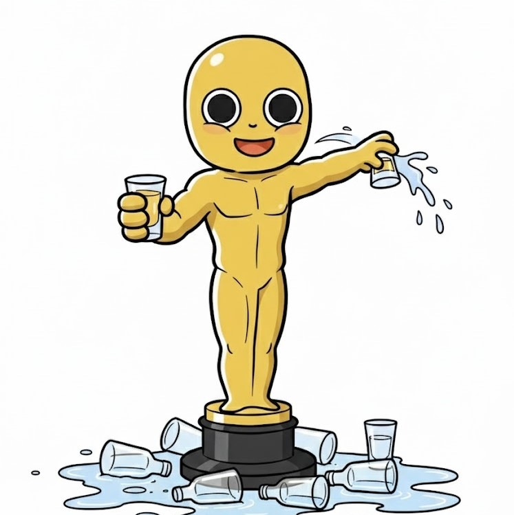

Your drunk personality is...

Secretly can't drink, but fakes it so convincingly nobody has ever found out. Quietly replaces their glass with water while maintaining full party energy. An absolute acting legend.
Core Traits: The Stealth Hospitality Master
You love going out, and you care deeply about the group's vibe. Ruining the energy by asking for a non-alcoholic drink in a room where everyone is having fun is something you refuse to do. So you fake it. Flawlessly. With conviction. This same empathy and commitment drives your professional and personal life in ways people only appreciate much later.
At a Night Out: The Oolong Tea Undercover Operation
Quietly swapping your beer glass for a non-alcoholic while maintaining identical energy levels. Your ability to order a discreet non-alcoholic drink while appearing to be drinking actively is, frankly, an art form. Nobody notices. The vibe is preserved. You're the secret backstage crew keeping this whole production alive.
Strengths & Charm: Ultimate Self-Sacrifice and Consideration
You never cause trouble. The party never dies because of you. Your unsung dedication to the group experience is a kind of quiet love that people don't fully realize until much later. You are the shadow hero of every night out.
【Authentic Self-Disclosure】
Try finding at least one person you can be honest with: "Hey, I actually wasn't drinking tonight." The pressure of performing comes with a real cost. Being real with someone you trust is freeing.